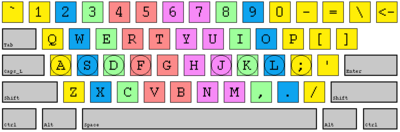

A collection of links to touch typing tutors and games.
Online Typing Tutors
- The Typing Cat - Free online keyboard typing tutor
- TypingClub - Learn Touch Typing Free
- typing.io - Typing Practice for Programmers
- Typing Scout - Faster typing means more spare time :)
- Solotyping - Touch Typing Course | Online Typing Test | Learn to Type Faster
- Ratatype — Online typing tutor and typing lessons
- 10FastFingers.com - Typing Test, Competitions, Practice & Typing Games
- TyperA - the original typing test
- TypingStudy - Touch Typing Practice Online
Software
- Fonttype (windows) - Look front. Type looking front. Frontype!.
- Onscreen keyboard to learn typing (instead of tutors). Interesting idea, I didn't try this myself
- GNU Typist (cross-platform) - typing tutor
- The Typing of the Dead (windows game) - Wikipedia, Steam
Touch Typing Games
- Nitro Type - Competitive Typing Game | Race Your Friends
- TypeRacer - Free typing game and competition
- Клавогонки - racing game
- ZType – Typing Game - Type to Shoot
- Hacker Typer - just start typing anything to look smart
- git-invaders ★ GitHub Game Off 2012
Keyboard Memo
Keyboard with finger positions (source: http://frontype.com/keyboarding/400px-Touch-typing.png):

Shows which key should be pressed with which finger (middle pink is for index fingers, green for middle fingers and so on).
Grey keys: I usually use pinky here, except for the space bar).
Space bar: Press with left thumb after typing a letter with right hand and press with the right thumb after typing a letter with left hand.

{kind=link}